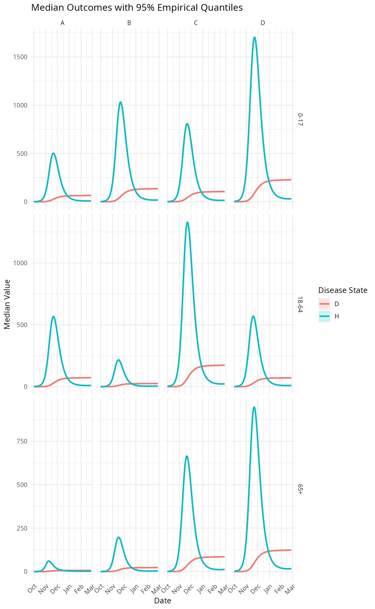

metaRVM() is the high-level entry point for running a MetaRVM
metapopulation respiratory virus simulation. It parses the configuration,
runs one or more simulation instances (deterministic or stochastic),
formats the ODIN/MetaRVM output into a tidy long table with calendar
dates and demographic attributes, and returns a MetaRVMResults
object for downstream analysis and plotting.
Arguments
- config_input
Configuration specification in one of three forms:
Character string: path to a YAML configuration file.
MetaRVMConfigobject: pre-initialized configuration.Named list: output from
parse_config()withreturn_object = FALSE.
Value
A MetaRVMResults R6 object with three key components:
- $results
A tidy
data.tablewith one row per date–subpopulation–disease state–instance combination. Typical columns include:date: calendar date (Date)age,race,zone: demographic categories (if present in the population mapping)disease_state: compartment or flow label (e.g.,S,E,I_symp,H,R,D,n_SE,n_IsympH, etc.)value: population count or daily flowinstance: simulation instance index (1, 2, …)
- $config
The
MetaRVMConfigobject used for the run.- $run_info
A list with metadata such as
n_instances,date_range,delta_t, and checkpoint information.
Details
The configuration input controls:
Population structure (e.g., age, race, zone)
Disease parameters (
ts,tv,ve,de,dp,da,ds,dh,dr,pea,psr,phr,dv, etc.)Mixing matrices (weekday/weekend, day/night contact patterns)
Vaccination schedule and immunity waning
Simulation settings (start date, length, number of instances, stochastic vs. deterministic mode, checkpointing)
Internally, metaRVM():
Parses the YAML configuration via
parse_config().Calls the ODIN-based simulation engine
meta_sim()for each instance.Uses
format_metarvm_output()to convert time steps to dates and attach demographic attributes.Wraps the formatted output and metadata in a
MetaRVMResultsobject that supports method chaining for subsetting, summarizing, and plotting.
References
Fadikar, A., et al. "Developing and deploying a use-inspired metapopulation modeling framework for detailed tracking of stratified health outcomes"
See also
parse_config() for reading YAML configurations,
MetaRVMConfig for configuration management,
MetaRVMResults for analysis and plotting,
meta_sim() for the low-level simulation engine.
Examples
options(odin.verbose = FALSE)
example_config <- system.file("extdata", "example_config.yaml",
package = "MetaRVM")
# Run a single-instance simulation from a YAML file
results <- metaRVM(example_config)
# Print a high-level summary
results
#> MetaRVM Results Object
#> =====================
#> Instances: 1
#> Populations: 24
#> Date range: 2023-10-01 to 2024-02-27
#> Total observations: 111600
#> Disease states: D, E, H, I_all, I_asymp, I_eff, I_presymp, I_symp, P, R, S, V, cum_V, mob_pop, n_EI, n_EIpresymp, n_HD, n_HR, n_HRD, n_IasympR, n_IsympH, n_IsympR, n_IsympRH, n_SE, n_SV, n_VE, n_VS, n_preIsymp, p_HRD, p_SE, p_VE
# Access the tidy results table
head(results$results)
#> date age race zone disease_state value instance
#> <Date> <char> <char> <char> <char> <num> <int>
#> 1: 2023-10-01 0-17 A 11 D 2.252583e-04 1
#> 2: 2023-10-01 0-17 A 11 E 1.305178e+01 1
#> 3: 2023-10-01 0-17 A 11 H 2.304447e-01 1
#> 4: 2023-10-01 0-17 A 11 I_all 2.731688e+01 1
#> 5: 2023-10-01 0-17 A 11 I_asymp 3.227854e-01 1
#> 6: 2023-10-01 0-17 A 11 I_eff 2.476245e+01 1
# Summarize and plot hospitalizations and deaths by age and race
results$summarize(
group_by = c("age", "race"),
disease_states = c("H", "D"),
stats = c("median", "quantile"),
quantiles = c(0.25, 0.75)
)$plot()

# Using a pre-parsed configuration object
cfg <- parse_config(example_config, return_object = TRUE)
results2 <- metaRVM(cfg)